01
Physiothérapie
Rééducation musculo-squelettique, thérapie manuelle et exercices actifs — avec ou sans prescription.
ConventionnéToukin réunit physiothérapie, ostéopathie et préparation physique sous un même toit. Une approche humaine et globale, pensée autour de vous.
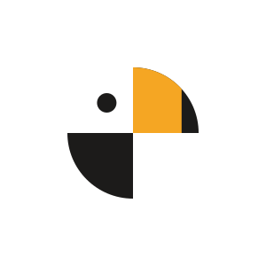
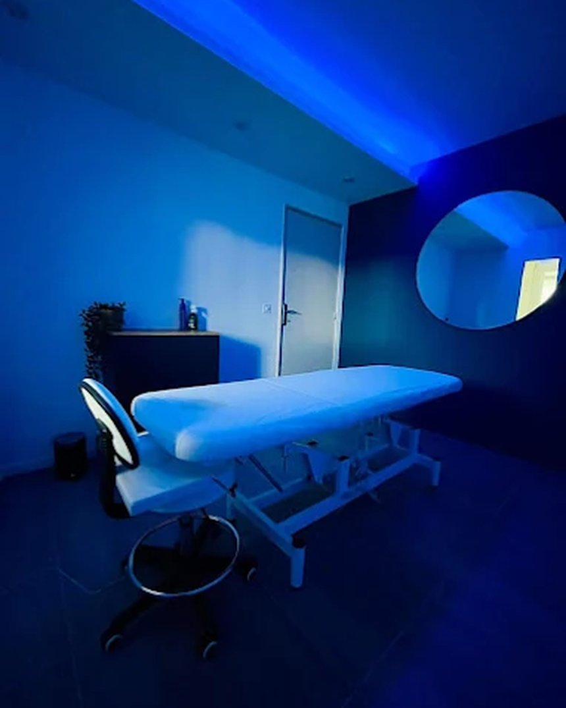
Le corps n'est pas une somme de douleurs à éteindre, mais un mouvement à retrouver. Notre métier, c'est de vous y ramener.
Rééducation musculo-squelettique, thérapie manuelle et exercices actifs — avec ou sans prescription.
ConventionnéApproche manuelle globale pour rétablir la mobilité des tissus et restaurer l'équilibre du corps.
HolistiqueRenforcement, reathlétisation et performance. Des programmes individualisés, du sportif au quotidien.
PerformanceTechniques manuelles ciblées pour relâcher les tensions et accompagner la récupération.
RécupérationConseils personnalisés pour soutenir votre santé, votre récupération et vos objectifs.
Bien-êtrePhysiothérapie respiratoire, neurologique et prise en charge complexe de plusieurs régions.
Expertise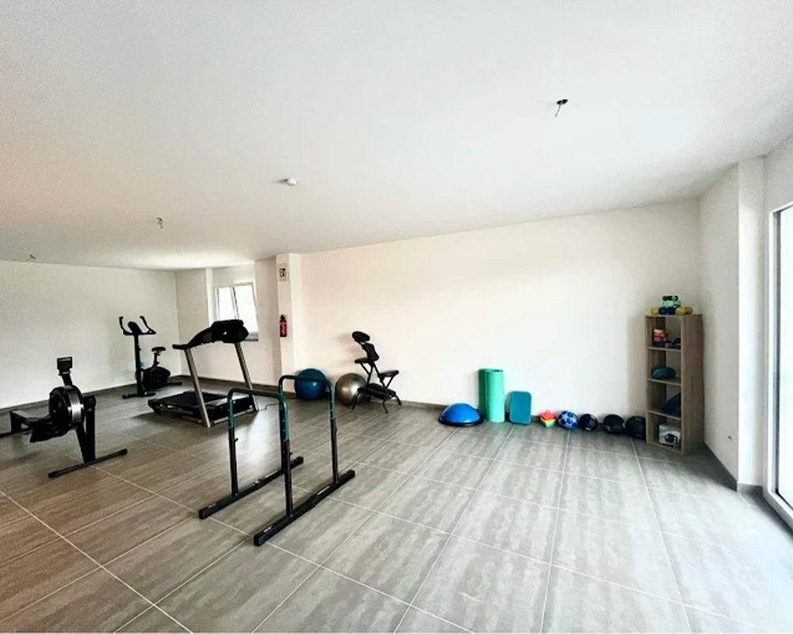
Nous ne traitons pas seulement un symptôme : nous comprenons votre histoire, votre corps et vos objectifs pour bâtir un parcours de soin cohérent et durable.
Une première séance dédiée à la cause réelle, pas seulement à la douleur.
Physiothérapeutes, ostéopathes et préparateurs collaborent autour de vous.
Des exercices et conseils concrets pour reprendre le contrôle de votre santé.
Des espaces modernes et apaisants à Tolochenaz : salles de soin, plateau de mouvement et accueil chaleureux.
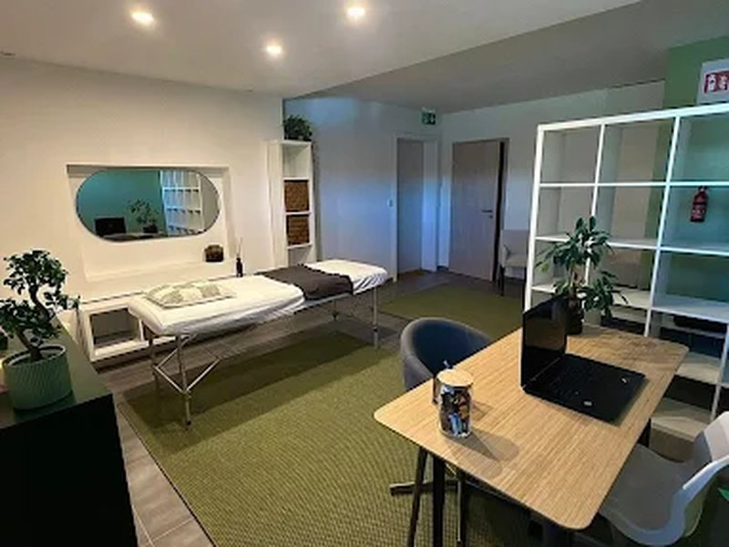
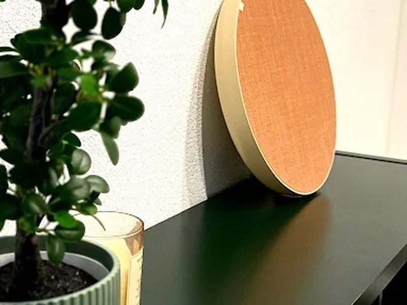
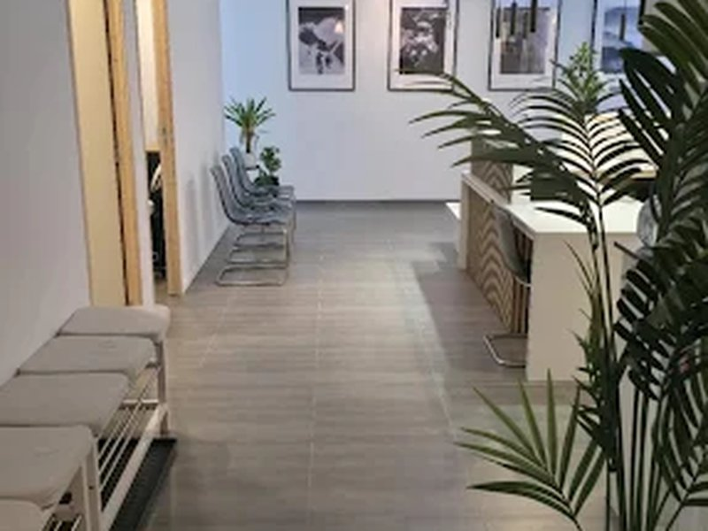
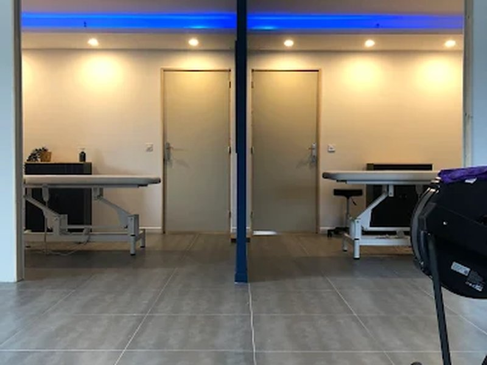
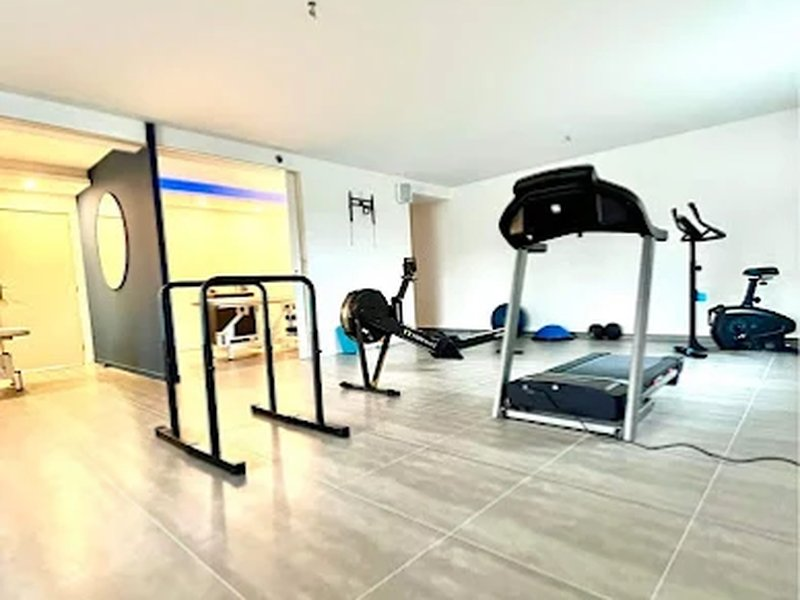
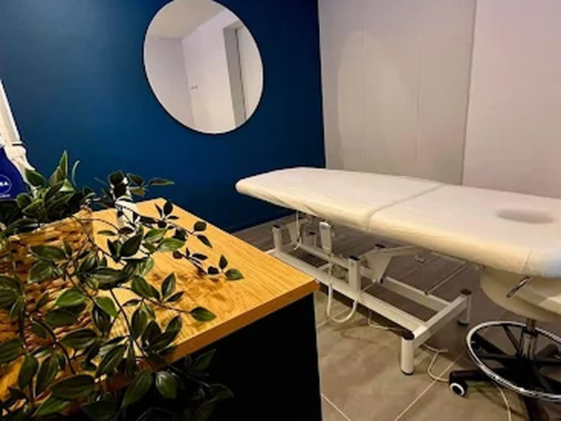
Une équipe qui partage une même conviction : remettre l'humain et le mouvement au cœur du soin.
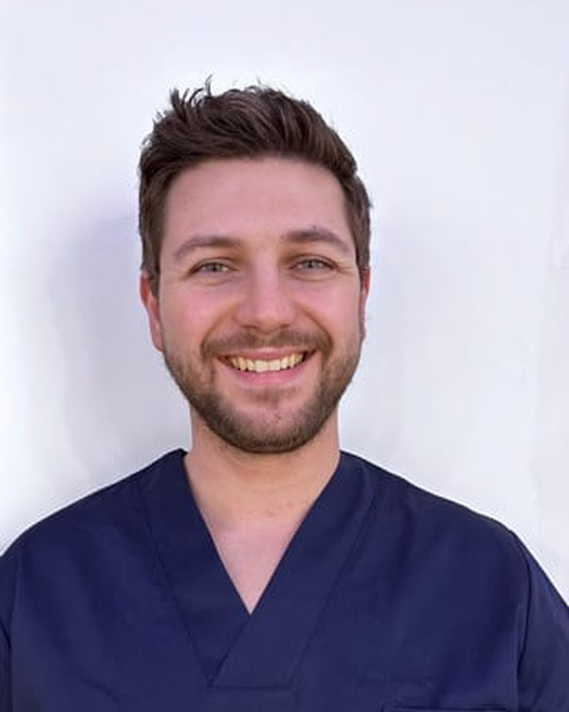
FondateurPhysiothérapie générale et sportive, respiratoire, prise en charge de la douleur chronique et du dos. Également à domicile.
Physiothérapie générale, drainage lymphatique et bandage, ainsi que physiothérapie respiratoire.
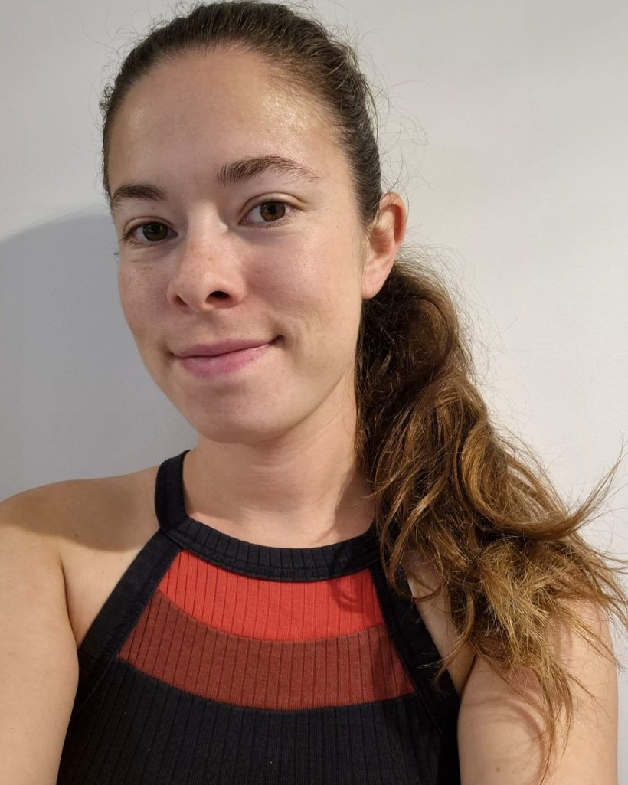
Physiothérapie générale, sénologie, rééducation post-partum et accompagnement en oncologie.
Au-delà du soin individuel, des cours en groupe pour entretenir mobilité, force et bien-être.
Souplesse, respiration et ancrage corporel.
Gainage profond et contrôle du mouvement.
Force et stabilité pour prévenir les blessures.
Mobilité et équilibre en douceur, à tout âge.
Une prise en charge sérieuse et chaleureuse. J'ai enfin compris l'origine de mes douleurs et retrouvé ma mobilité.
Un centre moderne et une équipe à l'écoute. La combinaison physio + préparation physique a tout changé pour ma reprise du sport.
Accueil impeccable, locaux agréables et un vrai suivi. Je recommande Toukin à 100 %.
Réservez votre première séance en quelques clics, avec ou sans ordonnance.
À deux pas de Morges. Réservation en ligne ou par e-mail.
Route de Genève 32C
1131 Tolochenaz (VD), Suisse
Toukin sur les réseaux
Conseils, exercices, coulisses du centre et actualités du collectif.
Instagram
Exercices, conseils prévention et vie du centre.
SuivreYouTube
Vidéos d'exercices et de conseils pour bouger mieux.
RegarderFacebook
Actualités, événements et nouveautés du collectif.
AimerLinkedIn
Le collectif, son équipe et ses projets.
Se connecter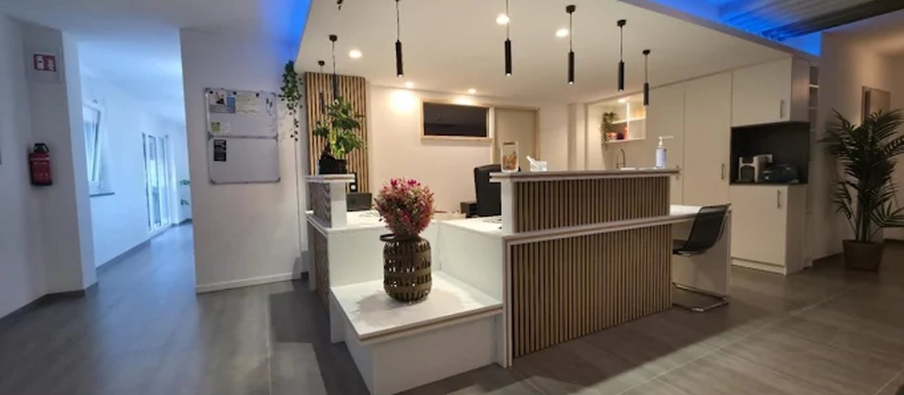
Exercices & conseils en vidéo
Nos routines de mobilité, de renforcement et nos conseils prévention.